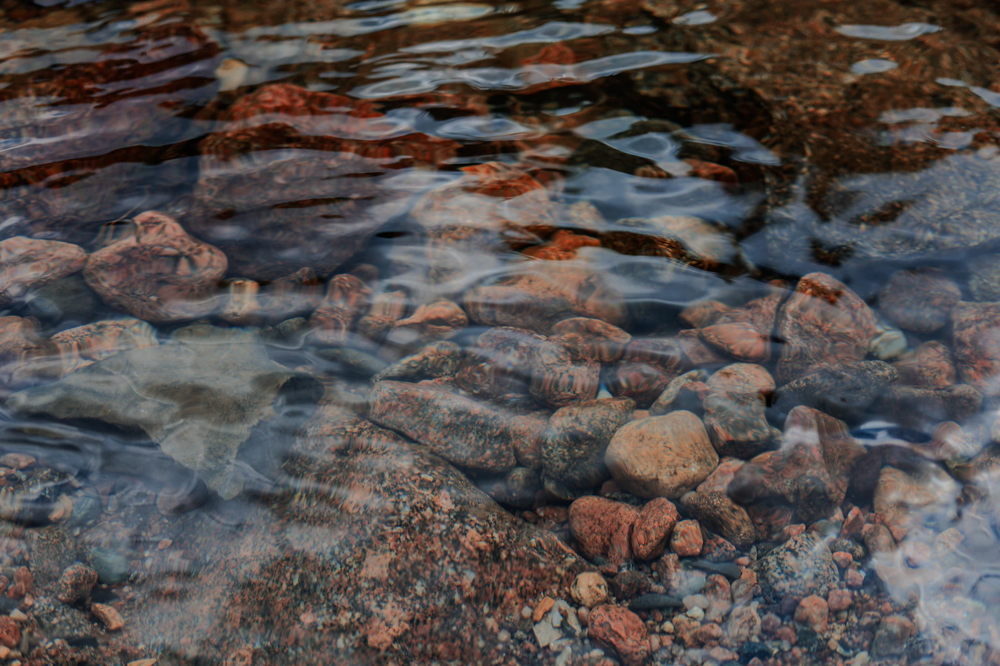
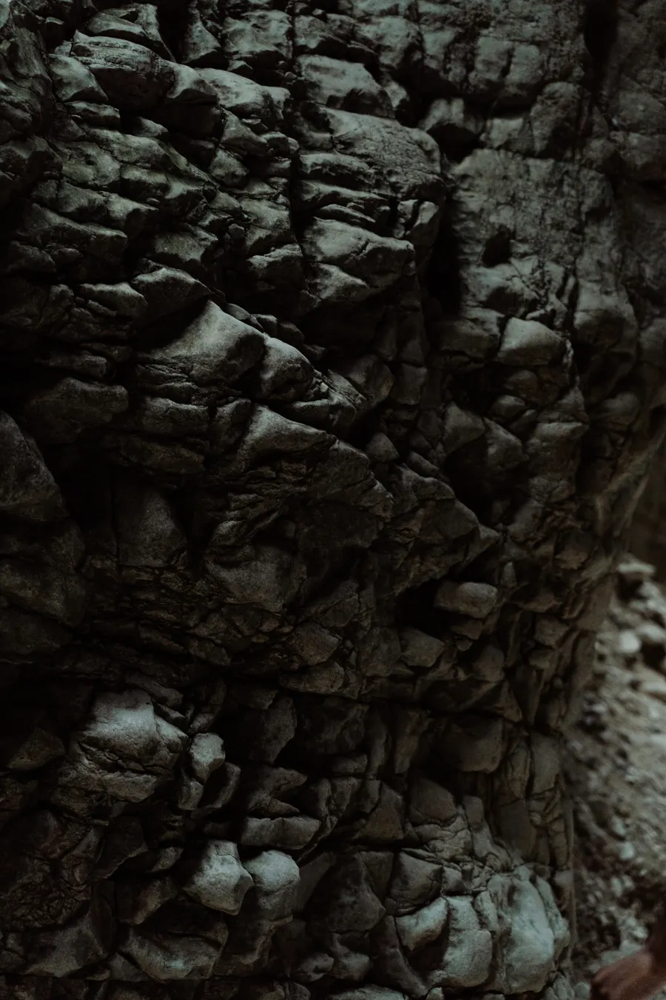
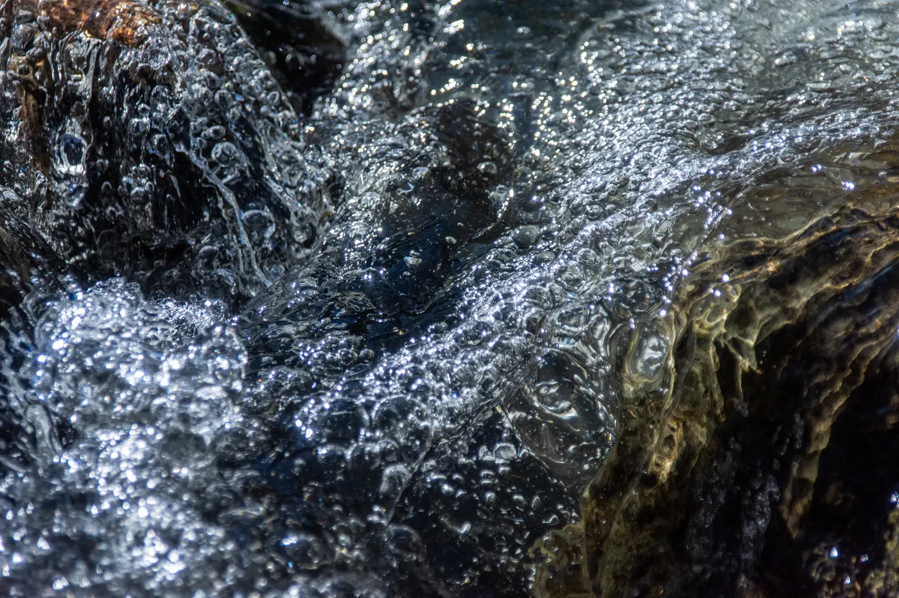

MANANTIALDE LOSCAÑITOS
Alojamiento rural
El Bosque, Cádiz

Piedra y
vegetación
Estas fotografías de naturaleza son ilustrativas. No corresponden al alojamiento ni a su entorno concreto.
El alojamiento
Manantial de los Cañitos es un alojamiento rural en El Bosque, Sierra de Cádiz. Puedes consultar los detalles de tu estancia por teléfono.
Consultar por teléfonoJunto al
manantial
La ubicación facilitada sitúa el alojamiento junto al Manantial de los Cañitos, en El Bosque.

El Bosque,
Cádiz
Junto al Manantial
de los CañitosCarretera
11670 El Bosque, CádizBuscar en Google Maps
de los CañitosCarretera
11670 El Bosque, CádizBuscar en Google Maps
El enlace abre una búsqueda de la dirección. Confirma el acceso al alojamiento por teléfono.